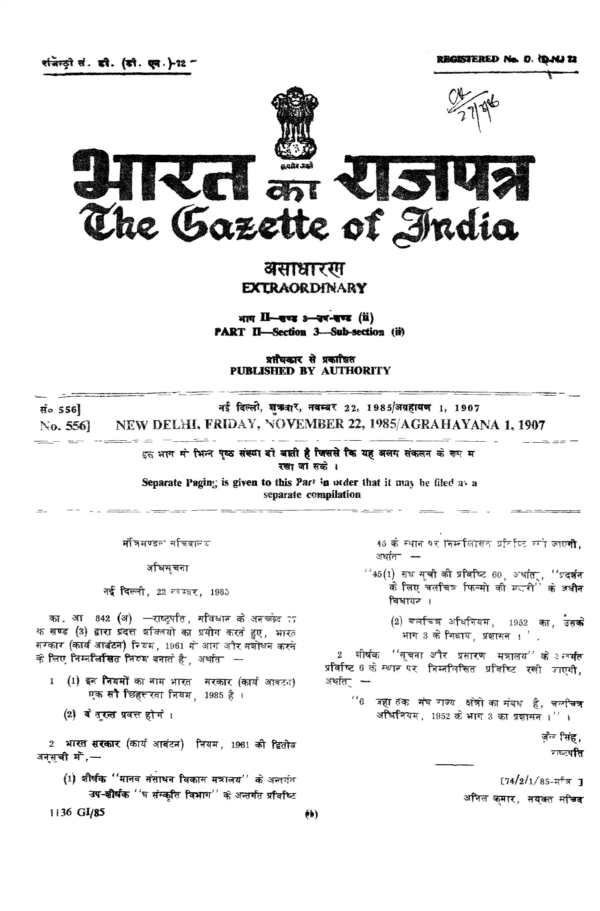
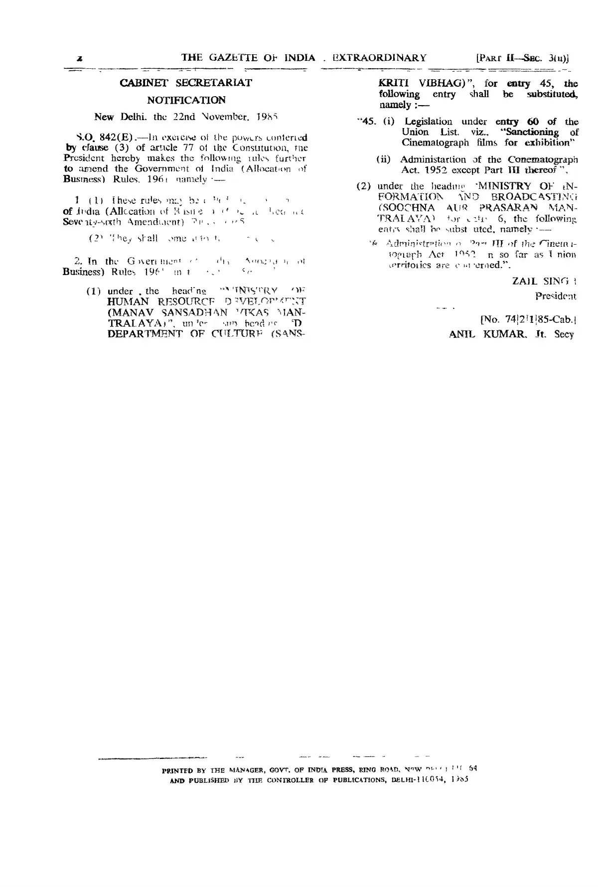

Amendment #176 (S.O. 842(E), 1985)
2 changes: 0 to the First Schedule, 2 to the Second Schedule. 2 applied
The order, page by page
Page 1 of 2

Page 2 of 2

12Schedule 2 › INISTRY F HUMAN RESOURCE DEVELOPMENT › DEPARTMENT OF CULTURE › entry 45
- 45.
- i. Legislation under entry 60 of the Union List. viz.. "Sanctioning of Cinematograph films for exhibition
- ii. Administartion of the Conematograph Act. 1952 except Part III thereof
applied at schedule 2 › ministry MINISTRY OF HUMAN RESOURCE DEVELOP- MENT › department D › entry 45 in the Rules after #176
states inferred loose
Schedule 2 › MINISTRY OF N- FORMATION AND BROADCASTING › entry 6
- 4 Administration o Da FII of the Cinen 1- 10piarh Act 1942 n so far as I nion erritotics are wierned.
applied at schedule 2 › ministry MINISTRY OF INFORMATION AND BROADCASTING › group_heading II › entry 6 in the Rules after #176
states inferred loose
How this document was read
Changes placed by an inference rule
| Change | Rule | Status | What |
|---|---|---|---|
| 1 | loose | accepted | change 1: ministry INISTRY F HUMAN RESOURCE DEVELOPMENT taken for ministry MINISTRY OF HUMAN RESOURCE DEVELOP- MENT, named loosely |
| 2 | loose | accepted | change 2: ministry MINISTRY OF N- FORMATION AND BROADCASTING taken for ministry MINISTRY OF INFORMATION AND BROADCASTING, named loosely |
From the Government of India (Allocation of Business) Rules, 1961 and their amendments, as published by the Cabinet Secretariat (cabsec.gov.in), read by orgpedia. The readings of the older scanned gazettes have known gaps.